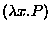
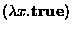
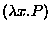
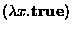
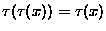
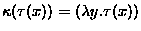

The equations (P = true) = (if P then  else
else  )(true,false) and (P = true) =
(

=

(where P is a variable
and so in particular does not contain a free occurrence of x) are
readily proven true in our system of stratified
)(true,false) and (P = true) =
(

=

(where P is a variable
and so in particular does not contain a free occurrence of x) are
readily proven true in our system of stratified  -calculus.
The intriguing feature of these equations is that the relative type of
P on the two sides of each equation is different; in fact, any
expression whose value is a truth-value can have its type freely
raised or lowered by any amount by application of these equations,
which suggests that a more liberal criterion of stratification is
possible where certain subterms are known to represent truth values.
-calculus.
The intriguing feature of these equations is that the relative type of
P on the two sides of each equation is different; in fact, any
expression whose value is a truth-value can have its type freely
raised or lowered by any amount by application of these equations,
which suggests that a more liberal criterion of stratification is
possible where certain subterms are known to represent truth values.
The fact about the set of truth values indicated in the paragraph above is stated in the terminology of NF and related set theories as ``the set of truth values is strongly Cantorian''. Formally speaking, the defining characteristic of a strongly Cantorian set A is that the restriction of the constant function constructor to the set A is realized by a function. We say ``realized by a function'' because all functions in our logic have universal domain and may be applied to objects other than elements of the set A. We can sharpen this by using retractions (functions such that  for all x) with range A to represent sets A. We then can define a (nonempty) strongly Cantorian domain as the range of a retraction such that there is a function such that  for all x.
The importance of strongly Cantorian sets in set theories like NF, and of strongly Cantorian domains in stratified
 -calculus, is that comprehension or abstraction over these
sets is less affected by stratification restrictions. Moreover, they
are closed under operations precisely analogous to the type
constructors under which we would want data types to be closed in
computer science: the realm of strongly Cantorian sets is closed under
cartesian product, power set, and the set theoretical analogue of the
arrow type constructor. It contains all concrete finite sets. The
assertion that the set of natural numbers is strongly Cantorian is
consistent with our stratified
-calculus, is that comprehension or abstraction over these
sets is less affected by stratification restrictions. Moreover, they
are closed under operations precisely analogous to the type
constructors under which we would want data types to be closed in
computer science: the realm of strongly Cantorian sets is closed under
cartesian product, power set, and the set theoretical analogue of the
arrow type constructor. It contains all concrete finite sets. The
assertion that the set of natural numbers is strongly Cantorian is
consistent with our stratified  -calculus (though it
strengthens it somewhat) and implies further that any set we are
likely to want to use as a data type in computer science (or, indeed,
in most of mathematics outside of technical set theory) is strongly
Cantorian. This assertion completes the underlying logic of Watson.
-calculus (though it
strengthens it somewhat) and implies further that any set we are
likely to want to use as a data type in computer science (or, indeed,
in most of mathematics outside of technical set theory) is strongly
Cantorian. This assertion completes the underlying logic of Watson.
Just as in the case of the truth values above, any term whose value is
guaranteed to belong to a fixed strongly Cantorian set may have its
relative type freely raised or lowered in determining stratification
of a  -term. It turns out to be a practical necessity for the
handling of quantification that the stratification-checking features
of Watson be able to recognize at least the type of truth-values as a
strongly Cantorian domain, and we went ahead and incorporated a
feature of the prover supporting the recognition of general strongly
Cantorian domains, which will be discussed further below. As hinted
in the preceding paragraph, computer science data types are expected
to be represented in theories developed under Watson as strongly
Cantorian domains; retractions with strongly Cantorian range are
used as type labels.
-term. It turns out to be a practical necessity for the
handling of quantification that the stratification-checking features
of Watson be able to recognize at least the type of truth-values as a
strongly Cantorian domain, and we went ahead and incorporated a
feature of the prover supporting the recognition of general strongly
Cantorian domains, which will be discussed further below. As hinted
in the preceding paragraph, computer science data types are expected
to be represented in theories developed under Watson as strongly
Cantorian domains; retractions with strongly Cantorian range are
used as type labels.
There is a discussion of the theory behind the representation of data types using strong Cantorian domains in chapter 23 of our book [17].